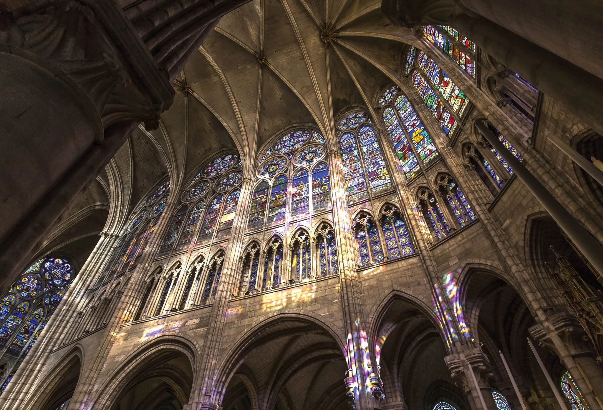
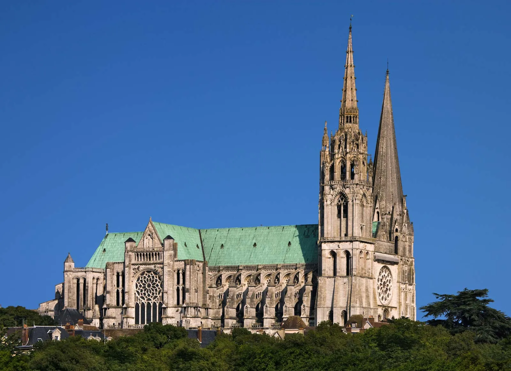
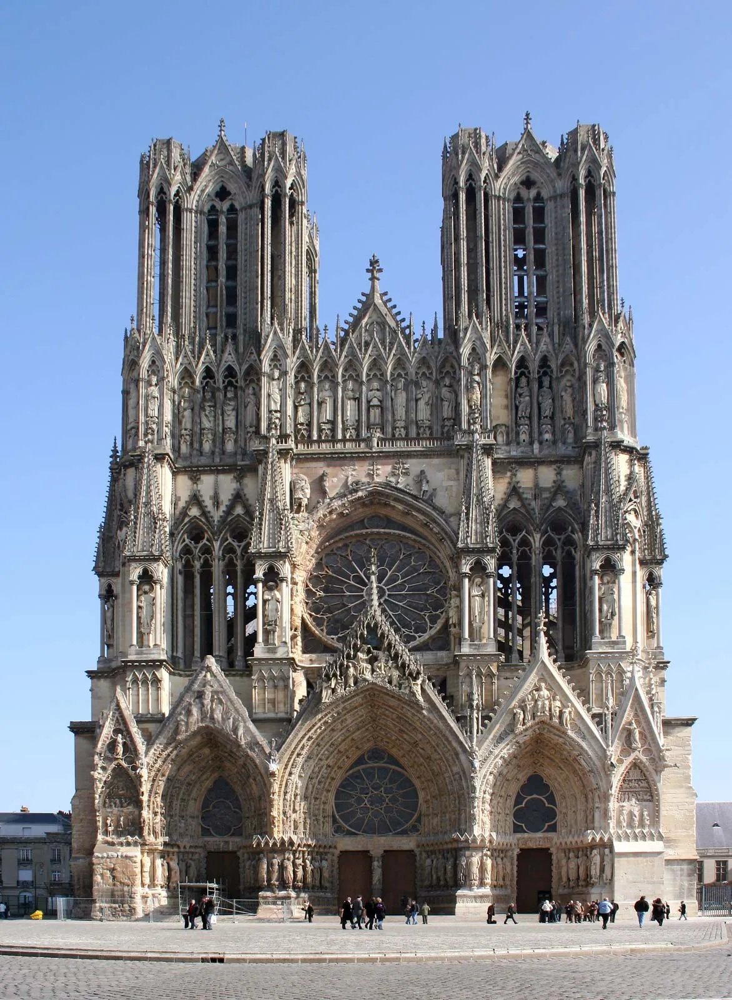
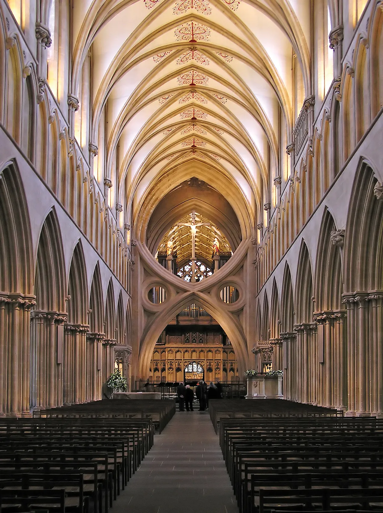

Cologne Cathedral: The largest Gothic church in northern Europe, the Cologne Cathedral is located in Germany and took 632 years to construct.

Canterbury Cathedral: Canterbury Cathedral's architecture reflects the changing of architectural styles within the Medieval period, with Romanesque and Norman arches as well as pointed, Gothic ones.
St. Denis Basilica: The St. Denis Basilica is regarded as the first truly Gothic building and marks the evolution from Romanesque architecture.
Chartres Cathedral: The Chartres Cathedral boasts one of the largest sets of stained glass in the world and was one of the first cathedrals to extensively use flying buttresses.
Reims Cathedral: The Reims Cathedral is especially know for its 2,303 statues on its walls, one of which is particularly famous: L'Ange au Sourire, the Smiling Angel.
Wells Cathedral: Wells Cathedral is the first English cathedral to be built entirely in the Gothic style, and is also well known for their scissor arches that support the central tower.